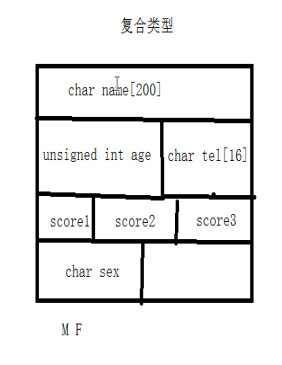

结构体定义及赋值
1、复合类型在内存中存放的模型：

2、定义结构体格式：
struct 结构体名称 ｛ 结构体成员列表 ｝ ； 分号结尾

3、在主函数中结构体表述格式：

定义结构体变量：
①struct 结构体名称 结构体变量名
②结构体变量名.机构体成员列表 = 值
注：如果是字符串类型 需要使用strcpy；

4、赋值方式
①按照结构顺序赋值

②打印结构体成员方式：

打印结果

②赋值方式2

③赋值方式3

注意：如果是是字符串格式需要使用strcpy来进行赋值
④赋值方式4

结构体大小和内存结构；
1、结构体大小：
注意：结构体需要根据数据类型进行内存对齐；

打印结果

2、内存结构模型图：
注意：所有数据类型的大小在内存中存储的资质一定是他的类型的倍数

①写结构体位置根据数据类型从大到小的方式书写；

②有利于节省空间，不利于输出格式的阅读；利于输出格式的阅读，不利于节省空间；需要根据当时权重进行排列；

结构体数组
1、结构体数组格式

2、学生成绩案例
冒泡排序：
交换方式1


交换方式2 结构体变量交换；

3、结构体和指针
①结构体成员为指针：

②结构体指针

释放

③堆空间开辟结构体，通过指针来实现:

模型图：
①结构体包含指针对应的空间

②结构体指针：

③在堆中开辟结构体：

结构体作为函数参数
1、结构体做为形参，不会改变主函数中实参的值；

2、结构体指针做为形参

返回方式
1、结构体作为返回值

2、结构体指针作为返回值

结构体嵌套结构体
1、定义及赋值

2、结构体大小
模型图1：

模型图2

共用体
联合union是一个能在同一个存储空间存储不同类型数据的类型；
格式：union 共用体名称 成员列表 共用体变量名

注意：共用体所占的内存长度等于其最长成员的长度；
在共用体中最后一次赋值，它的值为准确的。
枚举
enum 将变量的值一一列举出来，变量的值只限于列举出来的值的范围内。

应用方向：流程化操作
枚举与switch联合使用
typedef
作用：为一种数据类型(基本类型或自定义数据类型)定义一个新名字，不能创建新类型

结构体在.h头文件中定义，在当前它文件中引用其头文件可直接使用

在文件中使用，引用函数体所在文件的头文件